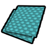
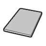
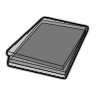
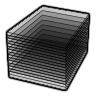
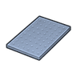
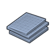

能力档 C2 · 塑料级与塑料同档:家具/壳体/工具柄/软质防具;机械台、重结构、重甲一律选不到
石化工业·后期Vile塑料级·石化工业·有机玻璃Plexiglass
塑料级可塑成品 458 件:家具建筑270 · 防具107 · 穿戴件18 · 近战工具50 · 远程武器7 · 其它6
常规硬性件331 + 轻量塑料件96 + 透明件(窗/门/天窗)31
vs 塑料多 10 件(磨尖武器、自动门…);比钢少 503 件 —— 如 破墙斧、铁丝网… 都选不到它
生效 Things/Item/Material/PolycarbonateClear

aHSK修复整合 bHSK修复整合
bHSK修复整合 cHSK修复整合
cHSK修复整合同路径未生效(被覆盖)

aVile's Materials Science
bVile's Materials Science
cVile's Materials ScienceThings/Item/Material/PolycarbonateClear StackCount RGBA(179,234,255,200)另有 1 套同名贴图未生效
护甲 0.75/1.40/0.10 利钝 0.60/1 价值 2 质量 0.25 Bulk 0.35
stuff Glass, LightMaterial, Plastic, StrongMetallic
HSK Plastics, LightBar, INSBar, GlassCat
产自 Make Plexiglass x25(石油化工装置)
源 Vile's Materials Science
Alloys_Industrial_Composites.xml
石化工业·后期Vile塑料级·石化工业·ABS树脂ABS
塑料级可塑成品 448 件:家具建筑262 · 防具106 · 穿戴件18 · 近战工具49 · 远程武器7 · 其它6
常规硬性件331 + 轻量塑料件113 + 耐腐蚀设备4
vs 塑料用途 100% 重合,只差护甲/重量/价值;比钢少 504 件 —— 如 破墙斧、mechband antenna… 都选不到它
生效 Things/Item/Material/ABSBlack

aHSK修复整合 bHSK修复整合
bHSK修复整合 cHSK修复整合
cHSK修复整合同路径未生效(被覆盖)
 aVile's Materials Science
aVile's Materials Science
bVile's Materials Science cVile's Materials Science
cVile's Materials ScienceThings/Item/Material/ABSBlack StackCount (41,55,57)另有 1 套同名贴图未生效
护甲 0.85/1.65/0.09 利钝 0.80/1.15 价值 4 质量 0.25 Bulk 0.35
stuff CorrosionResistant, LightMaterial, Plastic, StrongMetallic
HSK Plastics, LightBar, INSBar
产自 Make ABS Plastic x20(石油化工装置/Petrochemistry III)
源 Vile's Materials Science
Alloys_Industrial_Composites.xml
石化工业·后期Vile塑料级·石化工业·玻璃纤维Fiberglass
塑料级可塑成品 448 件:家具建筑262 · 防具106 · 穿戴件18 · 近战工具49 · 远程武器7 · 其它6
常规硬性件331 + 轻量塑料件113 + 耐腐蚀设备4
vs 塑料用途 100% 重合,只差护甲/重量/价值;比钢少 504 件 —— 如 破墙斧、mechband antenna… 都选不到它
 生效·SynteticfibresCore_SK
生效·SynteticfibresCore_SKThings/Item/Resource/Synteticfibres Single (235,160,70)(255,246,145)被1条配方消耗
护甲 1.15/1.45/0.16 利钝 0.70/0.80 价值 8 质量 0.28 Bulk 0.35
stuff CorrosionResistant, LightMaterial, Plastic, StrongMetallic
HSK Plastics, LightBar, INSBar
产自 Make Fiberglass x20(石油化工装置/Petrochemistry III)
源 Vile's Materials Science
Alloys_Industrial_Composites.xml